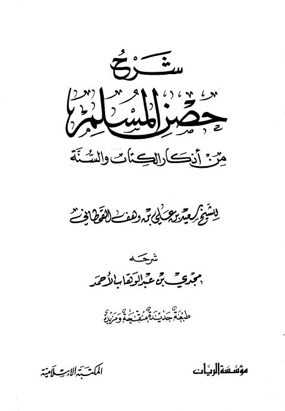

Downloads need an internet connection.
شرح حصن المسلم من أذكار الكتاب والسنة- ط3
Authors: سعيد بن علي بن وهف القحطاني
Publishers: المكتبة الإسلامية مؤسسة الريان
▫️ العنوان: شرح حصن المسلم من أذكار الكتاب والسنة- ط3 ▪️ المؤلف: #سعيد_بن_علي_بن_وهف_القحطاني ▫️ الناشر: #مؤسسة_الريان • #المكتبة_الإسلامية ▪️ تاريخ النشر: 1430هـ 2009م ▫️ بلد النشر: بيروت، #لبنان • عمان، #الأردن ▪️ الطبعة: 3 ▫️ عدد الأجزاء: 1 ▪️ الصفحات: 272 ▫️ نوع الوعاء: #كتاب ▪️ التصنيف الرئيسي: #الزهد_والرقائق ۪